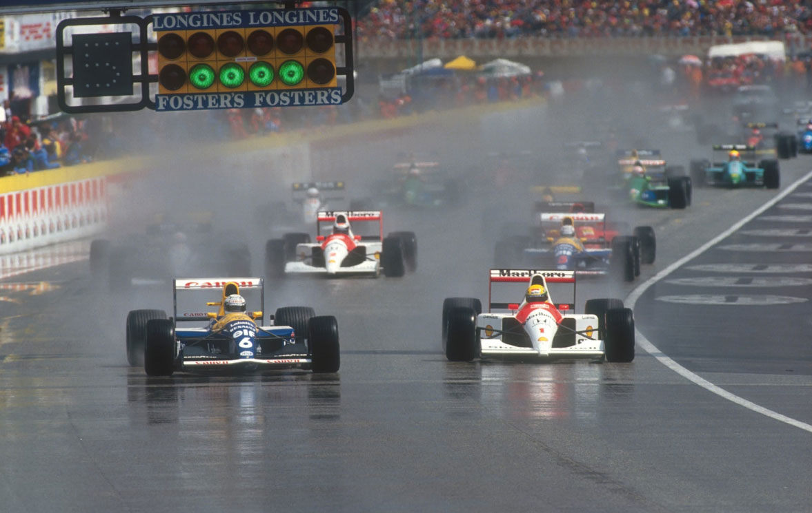

Ímola - 28/04/1991
SENNA DISPARA NA FRENTE
Pole e vitória de Senna em dobradinha da McLaren, depois de Patrese liderar. Humilhação para a Ferrari - Prost nem larga e Alesi abandona na 2ª volta. Piquet também erra. Lehto é 3º e Hakkinen, 5°. Van de Poele quase termina nos pontos.°
Por Francisco Santos
Que prova estranha e decepcionante para muitos. Ao final de duas voltas já Mansell, Piquet e Alesi tinham abandonado. Prost nem sequer havia conseguido largar. Para os "tiffosi" que na noite anterior haviam ficado de vigília em frente aos boxes da Ferrari era o desalento total, uma afronta ao seu fervor e sacrifício. Por isso foram saindo logo do circuito. Em sinal de protesto. Para eles, nada mais importa. Vão às corridas para ver a Ferrari. E sem as duas Ferrari em prova, voltaram as costas foram logo embora. Outros, mais italianos e menos "ferraristi", ainda foram tentados a manter-se firmes em seus lugares molhados: é que do males o menor, Riccardo Patrese comandava a prova de forma dominadora, prometendo uma repetição de sua vitória no ano anterior. Pelo menos, a McLaren e Ayrton Senna poderiam ser destronados. Com essa esperança foram ficando. Mas, por pouco tempo, já que à 10a volta o motor de Patrese morre nos boxes quando o piloto decide por uma troca por pneus slicks logo que a pista começou a secar. Se tivessem ficado até ao final da prova, esses espectadores teriam assistido a um final ainda mais inusitado: a seis voltas do final além da dupla de McLaren, estavam entre os seis primeiros Lehto, Martini, Van de Poele e Bailey; e, no final da prova, apenas Van de Poele, a correr o seu primeiro GP depois de não ter pré-qualificado o Lambo em Phoenix e em Interlagos, tem o azar de ficar sem gasolina a 700 metros da chegada (mais tarde verificou-se que ainda tinha 27 litros no tanque, e que havia sido um problema de alimentação), sendo passado pelos dois Lotus, com Hakkinen num brilhante 5º lugar em apenas o seu terceiro GP.

As intempéries da República
A República de San Marino, a menor de toda a Europa, é um minúsculo enclave no norte da Itália, na base dos Apeninos, perto das cidades italianas adriáticas de Remini e Riccione. Com 23.000 habitantes e 61km2, esta república governada por um conselho eleito de 60 políticos de coligação defende a sua independência administrativa e sua identidade cultural com raízes no século XIII, quando se tornou comuna independente. No entanto, é muito dependente da Itália. Moeda e língua são italianas, bem como a sua polícia que é contratada na Itália. No campo desportivo herdou um Grande Prêmio do fervor italiano em ter uma segunda corrida de F1 em seu solo. A prova disputa-se no circuito italiano de Imola, a 33 km de Bolonha e perto de Maranello. Esta é uma pista tradicional por favorecer os motores de maior potência e menor consumo, devido às suas subidas e descidas e repetidas zonas de grandes acelerações e desacelerações. Com curvas muito rápidas, como a Tamburello, e outras muito apertadas, como Tosa ou Rivazza, é, como Senna aponta, "um circuito muito técnico e com uma grande carga psicológica devido à presença de milhares de "tiffosi", e, principalmente, uma pista em que ninguém pode ficar na frente e esperar que os outros não passem...". Em abril as condições atmosféricas ainda estão um pouco instáveis nesta região, e frequentemente o GP depara-se com chuvas, como foi o caso deste ano, a perturbar os treinos de sábado e a largada. Meia hora antes do início caiu uma tempestade, inundando a pista. Foi esse o principal motivo do inusitado desfecho deste Grande Prêmio.
Van de Poele consegue passar
As pré-qualificações trouxeram uma novidade: o belga Eric van de Poele conseguiu passar pela primeira vez. Seu tempo foi apenas 0,13s inferior ao de Gachot (3°) ou mesmo apenas 0,58s pior do que o mais rápido, De Cesaris. Esta melhoria de forma do Lambo deve-se muito à versão especial do motor Lamborghini e ao combustível AGIP especial de que dispôs desta vez. No entanto, a passagem aos treinos oficiais fica-se a dever mais aos problemas da Dallara: primeiro, o carro de Lehto ficou sem embreagem e o finlandês usou o carro reserva, e, depois, o de Emmanuele Pirro que teve um curto-circuito que provocou um incêndio, ficando impossibilitado de melhorar o seu tempo pois havia entregue o carro reserva ao colega. Pedro Chaves ficou de novo de fora, agora com o último tempo, a mais de 5,7s do Jordan. Desta vez nem é possível justificar tal diferença pela inferioridade abismal de velocidade do Coloni (cerca de 19km/h) causado pela muito menor potência do motor DFR preparado pela Langford & Peck. "Era preciso um Hart, mas isso custa um milhão de dólares", lembra Enzo Coloni numa clara mensagem aos patrocinadores portugueses. Grouillard andou pela primeira vez no seco com o novo chassis Fomet 1, e contava agora com a ajuda do seu novo engenheiro de pista, Ricardo Divilla, vindo da Ligier. Mas, problemas de câmbio que lhe fizeram exceder rotações no motor, e de tráfego com van de Poele no final, o deixaram de fora também pela terceira vez este ano.
Coleção Primavera/Verão
O primeiro dia de treinos do GP de San Marino é sempre uma importante passarela dos últimos modelos para a nova estação européia. Nos últimos anos tem sido este o "debut" oficial dos chassis de vários construtores que não conseguem aprontar os novos carros para a temporada americana, usando da melhor forma o maior intervalo entre o Brasil e esta prova. Este ano não se tratava apenas de prazos. Os planos ou intenções de patrocínios de várias grandes empresas haviam sido dos poucos a serem atingidos pelos mísseis de Sadah Hussein. Muitas equipes encontravam sérios problemas econômicos para enfrentar os orçamentos milionários de desenvolvimento e fabrico de novos carros, e de leasing de motores. Há muito tempo que a coleção primavera/verão não era tão atingida por orçamentos reduzidos pelo clima de guerra. Mesmo assim. Benetton/Ford HB, Fondmetal/Ford DFR, Footwork/Porsche e, Brabham/Yamaha apresentavam carros novos.
55ª pole de Ayrton
Os treinos começaram da melhor forma para o povão italiano, com Ferrari e Minardi a marcarem o ritmo. Mas, Ayrton acabou com a "brincadeira" e passou a comandar. Berger deu um ar de sua graça e pelo resto da sessão as duas McLaren trocaram os melhores tempos, com Ayrton a fechar o treino na frente, meio segundo melhor que a sua pole de 1990. Prost foi terceiro. A grande desilusão veio da Benetton. Esperava-se muito dos novos B191, mas foram apenas 22º e 24º. Os carros quase não haviam testado e o fabrico de peças sobressalentes estava muito atrasado. Alboreto podia estar desolado, mas em face da triste situação dos Footwork/Porsche, cujo motor não andava nada, apenas se conformava com ter de usar o velho A11C pois nos testes preliminares detruíra o seu novo A12 num violento acidente cujas consequências físicas eram duas costelas quebradas e ferimentos numa perna. Claro que não se qualificaria. As nuvens pairavam ameaçadoras quando a sessão de qualificação começou. Para se precaverem da chuva, as duas McLaren saíram cedo para a pista, e Senna fez logo na sua primeira tentativa 1m22,646s, seguido de Berger a 0,3s. Logo de seguida as bancadas se alvoroçam: Alesi na pista, com uma Ferrari com motor especial de qualificação alimentado por um combustível ultraespecial da AGIP. Tudo para garantir a pole para Maranello. Mas, em vez de euforia, a desilusão em forma da nuvem de fumo a sair do motor Ferrari. Prost consegue acalmar os ânimos dos "tiffosi", e bate Berger. Os Williams ainda tinham algo a dizer: Patrese bate Ayrton à primeira tentativa e fica com a pole provisória (1m22,480s). Mas pouco depois as bancadas explodem de alegria e Cesare Fiorio de alívio: Prost consegue o melhor tempo. Patrese, apesar de ter sido preterido em favor de Mansell para o uso do motor Renault experimental de qualificação ("não entendo, tenho sido mais rápido do que ele nos treinos", resmungava o italiano) era o primeiro a baixar para o segundo 21. Ayrton, depois de alterar a regulagem no spoiler dianteiro, sai para a pista e consegue de novo o melhor tempo, record da pista em treinos, apesar de considerar que "não foi nenhuma volta especial, pois ainda havia muito para melhorar". Mansell, com gripe, mesmo com motor especial não conseguiria batê-lo. Modena conseguia o sexto tempo, e Morbidelli fazia melhor que Martini, com ambos os Minardi a disporem de gasolina e motores Ferrari especiais para chegarem ao 8º e 9º lugares do grid. Os Benetton eram 13º (Moreno) e 14º (Piquet), com os dois Jordan à sua frente. De realçar os tempos de Comas (19º, na frente de Boutsen) e de Van de Poele (21º). De notar que as primeiras sete filas eram divididas por sete equipes. Com as chuvas de sábado, o grid ficou definido com os tempos de 6ª feira. Os tempos de sábado foram, em média, 22s mais lentos do que sobre a pista seca da véspera, com Berger o mais rápido com 1m40,322s.
Descalabro Ferrari
Mesmo com a pole de Ayrton, o favoritismo racional ia para os Williams/Renault e para Riccardo Patrese, enquanto a cega esperança latina apenas baseada nos tempos dos últimos testes e no fervor vermelho rezava por uma vitória Ferrari. Para confundir tudo, depois de um "warm-up" ensolarado, dominado pelas duas McLaren, com Berger (meio tanque) 1,5s melhor que Senna, momentos antes da formação do grid, cai uma tempestade que inunda a pista. Na volta de apresentação, Prost e Berger caem na ratoeira de um enorme lago que se formara na direita antes da descida para Rivazza e deslizam para fora da pista, esquiando pelo gramado. Berger foi mais feliz e conseguiu voltar à pista, mas Prost ficou com a Ferrari com motor parado, junto aos guard rails, virada para cima. Era o fim para a primeira Ferrari. Uma vergonha, diante do seu público. Uma afronta para Prost, o crítico dos métodos na scuderia. No dia seguinte, os jornais italianos o chamavam de "ex-professor"... Estava na Itália e uma Ferrari ficava parada junto à pista enquanto o grid se formava. Chegou-se a temer que a largada fosse atrasada, mas Roland Bruynseraede, Official Starter, acendeu a luz vermelha e deu a largada. Patrese larga na frente e comanda a prova com facilidade por ter escolhido uma regulagem mais para molhado. Mansell largou mal com problemas de seleção de marchas, e perde várias posições. Os problemas de câmbio persistem e ele hesita numa entrada de curva e é abalroado pelo Brabham de Brundle, abandonando logo. Na volta seguinte, Piquet sai da pista ("andei demais e muito cedo"). Mas para o público italiano, o pior estava prestes a acontecer: Alesi, que ganhara 3 lugares na aproximação da primeira curva, faz uma ultrapassagem suicida a Modena e sai na curva seguinte para o abandono. A 3ª volta já não havia nenhuma Ferrari em prova. Humilhação total.
A vantagem de Patrese sobre Senna ia diminuindo à medida que a pista secava. Na 10ª volta, Patrese decide trocar para pneus slicks, mas quando entra na box, o motor começa a falhar, para morrer por completo, perdeu 4 voltas no box para trocar o sensor defeituoso, voltando à pista atrás de Senna, manteve o mesmo ritmo que o líder, para ter o mesmo problema mais tarde e abandonar. Na frente, Senna foi administrando a vantagem sobre Berger, o que não foi fácil a partir da metade da prova, quando a luz da pressão de óleo começou a acender intermitentemente. Lamentável atitude de Modena, em terceiro, a dificultar a passagem de Senna que lhe dava uma volta. Mas, o destino o ensinou, com outro abandono do Tyrrell (transmissão). Moreno ficava em terceiro a 4 voltas do final, com Lehto em quarto e Martini em quinto. Mas os problemas de câmbio do Benetton piorava: Moreno ficava sem a 2ª, depois sem a 5ª e 6ª, fazendo as últimas 15 voltas só com 3ª e 4ª. A 4 voltas do final o motor expira, e Lehto ascende ao pódio. Martini, que ficara sem embreagem na 15ª volta, consegue chegar em 4º, enquanto De Poele, não consegue manter o 5º lugar pois pára na última volta sem gasolina no motor, permitindo que os dois Lotus fiquem nos dois últimos lugares pontuáveis.